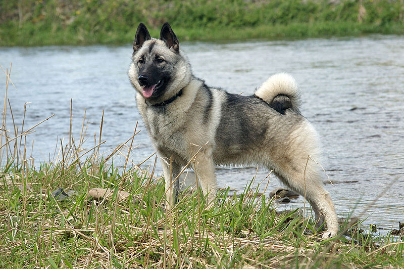

Final Project
My final project will be about Norwegian Elkhounds. I plan on discussing the history of the breed and if an Elkhound is right for you. I will also include places where you can get an Elkhound along with helpful resources and links.
I plan on using multiple concepts from Chapter 18. The main concept I will incorporate is putting all important information "above the fold." For example, the history page might be quite long. To accommodate for the length, I will break up the history into sections and include a fixed navigation so users can see what the full page is about without scrolling.
Another concept I will incorporate is to create a sitemap. Once I create a sitemap, I will sketch out the website design on paper. I also plan on using the proper header and navigation conventions such as a logo that will lead to the home page and links that look like they are clickable. I will also let users know where they are by highlighting the active link(s).